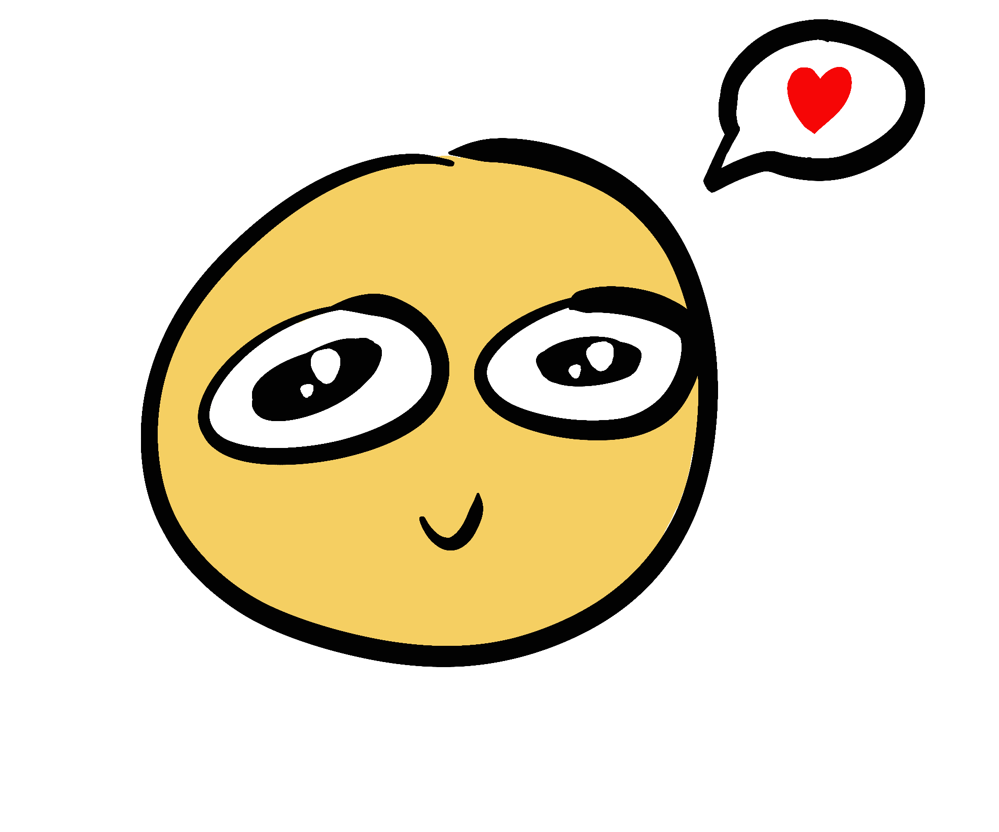

As my final project for my Intro to Web Development class and during a time where I begin to prepare for my journey after college, I wanted to make a website that was an "ode to my youth" in some way. This website serves as a "time capsule" of memorabilia I've collected over the years during college or objects that have had meaning to me during my time at college so far.
As you venture further into this website, the viewer can learn about all the memories, stories, and details behind each item, with many elements they can interact with to feel more immersed in the experience I've had with the object that I am trying to recreate. In this way, I am "preserving" my youth before I graduate for college and letting the viewer learn more about me in this way.
The bigger concept was to explore the ways in which web dev and web design can be used as a means for others to be able to easily be able to connect and understand intimate moments and memories of our own lives.
In this way, I hope viewers can experience my own experiences as their own as close as possible.
